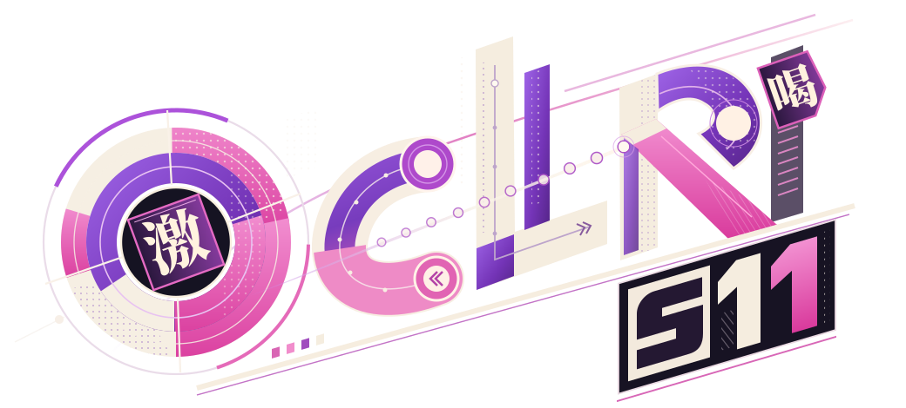
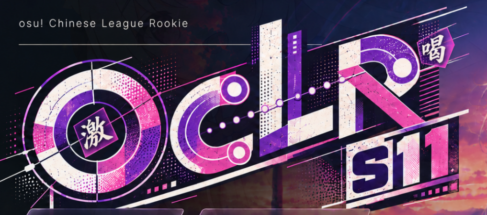

查看最新 R03：经典激、往返 C、串 L、一笔 R、准度条 →

O · 打击与判定
分段大圆环、approach circle，与圆心内的「激」判定构成主重心。
C / L / R · 滑条
曲线与直角轨道形成字母；圆端点、slider ticks 和逆向箭头参与笔画。
轨迹 · 连续运动
光标拖尾沿 follow points 收束到光标头；渐隐、方向与节奏有明确关系。
构图 · 高低与穿插
O 大、C 低、L 高、R 斜切；「喝」悬于右上，S11 沿斜轨下挂。
查看本次原始参考图
